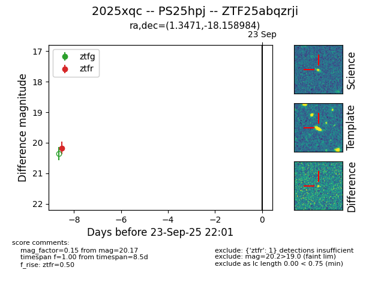

FINK: ZTF25abqzrji
Lasair: ZTF25abqzrji
ALeRCE: ZTF25abqzrji
TNS: 2025xqc
YSE: 2025xqc
ZTF25abqzrji (ztf,fink)
2025xqc (tns,yse)
PS25hpj (panstarrs)
equatorial (ra, dec) = (1.3471,-18.15898)
galactic (l, b) = (70.7486,-76.11009)

last ztfr=20.17
1 ztfr detections